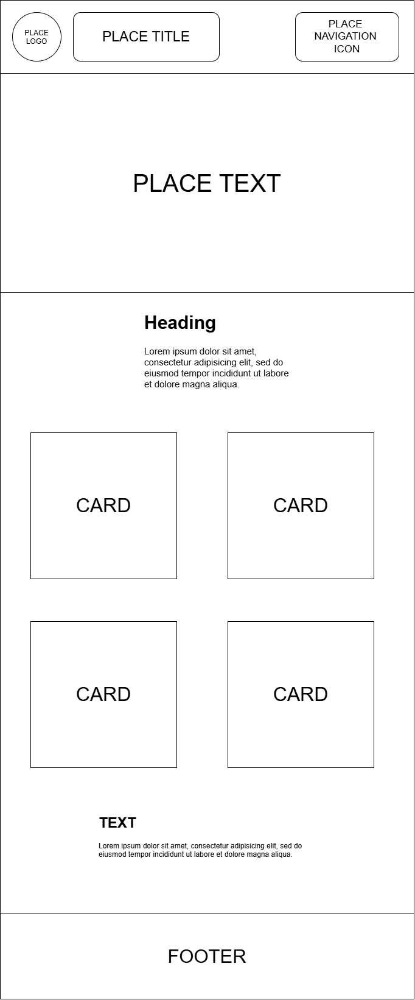
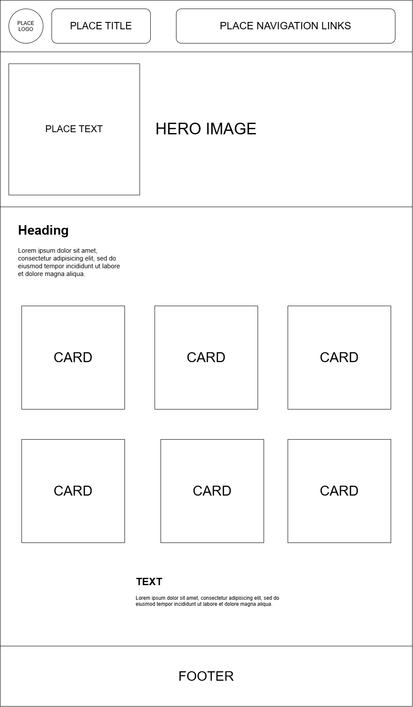

Site Name
Lys Administrative Consultancy - the name of an administrative consultancy the website promotes, so visitors can also have an online platform to refer to. The lily flower logo above will appear in the header of every page. Possible domain : lysconsultancy.org
Site Purpose
The website provides informational resources for people residing in Gabon. Users can explore common administrative procedures such as passport applications, residence permit applications, visa renewals, and required supporting documents. The site will also include a procedure search tool, administrative guides, and a contact form for assistance requests.
Scenarios
- How can I renew my passport?
- What documents are needed to apply for a residence permit?
- How can I obtain an entry visa for Gabon?
Color Schema
#5696C0 - Header, footer
#f0f4ef - Page background
#9ee16e - Accents, buttons, links
#0d1821 - Headings
#13171A - Paragraph text
Typography
Fira Sans will be used for headings, paragraphs, navigation links, buttons, and form labels.
Wireframes
Mobile View

Desktop View
